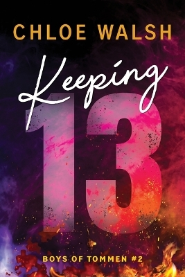

Emma's Book Reviews
The Only Opinion That Matters
Binding 13

˗ˏˋ ★ ★ ★ ★ ★ ˎˊ˗
Chloe Walsh
This book is my favourite romance book and it's my comfort book. I love Johnny and Shannon together and I found her trauma very sad.
Shannon is such a good character. She is amazingly written and even though she is a bit cringey at times I feel like she really encompassed a teenage girl going through a lot. I don't think she deserved anything that happened to her and I found her chapters quite sad to read. I found her as quite a timid character that had a lot of potential for character development. It was the most heartbreaking scene when she was nearly beaten to death by her father. I found it to be a very well written scene that had me reading very fast. I love where Walsh ended the book and thought it was the perfect segway into the next book.
I loved Johnny's character so much. He was perfectly written and really showcased someone with so much pressure to be perfect. I think he did not handle some things with Shannon the best but that is understandable because he was under so much pressure to be perfect. I found his and Shannon's relationship encompassed teen love amazingly as it was awkward and also adorable. I loved how he was able to learn and grow with Shannon. I found it kind of annoying how long it took for him to realise that he wanted to be with Shannon. I also thought that he was a bit of a bulldozer but in the best way.
I liked the other characters like Joey and Gibsie. They were all very interesting and I wanted to know more about them. I especially loved Gibsie and Johnny's friendship as it was so cute and funny to witness their reactions.
Shannon and Johnny work amazing together; they fit each other so well. I loved all their interactions no matter how cringey. The way Johnny looked for Shannon's shoe in the rain was the best as it showed how devoted he was to her. I also didn't really mind the slow burn as it was still very interesting and cute. They are the perfect couple and I will take no criticism.
Overall this book was amazing and I would recommend it to anyone who wants to read about a cute team romance.
Write a Review
Keeping 13

˗ˏˋ ★ ★ ★ ★ ★ ˎˊ˗
Chloe Walsh
This was an amazing sequel to Binding 13. I was so glad that it kept up with the cute banter and awkward interactions. Johnny and Shannon are still the best couple I have ever read about and I love them together.
Shannon's character was amazing and I love how well written she is. I found her backstory so interesting and sad. I found her chapters so sad and it just reminded me how young she is. I loved how we saw her character develop as she was able to stand up to her brother and mother in the middle. I loved how she was getting a lot more comfortable with Johnny throughout the book. When her dad came back I was so heartbroken for her. I was so glad when she called Johnny though. It was such a sad storyline when her Mum and Dad both died. It made me feel sorry for her even though she is not a real character.
I loved Johnny in his book and I thought his chapters were a much needed break from the sadness in Shannon's chapters. I found him to be such a likeable chapter. I loved how devoted and loyal he was and how he would do anything for the people he cares about. One of my favourite parts of his storyline is his evolution from being so committed to rugby to realising there is more outside of it. He was so committed to Shannon and I found that so adorable and I loved him so much even when he bulldozed. I found it so sad when he was so wrecked about leaving Marie in that house. He was so sad about it and it absolutely broke my heart and I may have cried during these chapters.
I also loved the other characters in this book. I enjoyed the characters of Edel, Gibsie, and Tadhg as they were really well written and a nice break from just Johnny and Shannon. I loved Edel and how supportive and kind she was to the Lynch siblings. She was so kind and seemed like she did not have a bad bone in her body. I also liked how Gibsie was a little comedic break from all the sad stuff happening.
Shannon and Johnny together are still my favourite couple I have ever read about. They are so cute and they work together so well. I want to meet them in real life. I will always recommend this book series as I think it is so cute and weirdly comforting.
Write a Review
Saving 6
˗ˏˋ ★ ★ ★ ★ ˎˊ˗
Chloe Walsh
I was not ready for these books. I was not ready for how sad Joey's point of view was going to be. I had to put it down and go on a walk so many times because it was so damn sad. I did love Joey and Aoife's relationship though as they were so cute together. I did keep thinking that if this happened in real life I would probably be judging them.
Aoife was such a great character. I loved how she knew what she wanted the whole time and how she was quite different to Joey. She was not the most complex character but she was still quite interesting and definitely had some layers to her. She came off as quite vain and headstrong at first but then reading more about her I found she had more depth and empathy to her. I liked the way that she knew she wanted Joey from the start but never pushed it too far and respected him and his boundaries. I think the only time she dropped her headstrong quality is when she was with Paul. I think she should've left him a lot sooner and not stuck around with him. Though I did feel so bad for her every time Joey relapsed or decided that he wasn't enough for her. I understand why he did but it didn't stop feeling bad for her.
Joey was such a sad character to read about. He deserved so much more and everytime I read Joey's chapters I was so sad. He deserved so much more and all he was trying to do was survive. I understood why he got into drugs but I felt so bad because all it did was hurt Shannon and Aoife. I loved his relationship with Tony and I found that to be very adorable and it seemed like a good escape from his home life. I loved how it dived deeper into his story and showed his devotion and the sacrifices he made for his family. I thought the emotional relationship between him and his mother was very interesting to watch play out and it was written very well.
Overall I really liked this book and how it focused on Aoife and Joey. I thought the emotional side of it was very well written and it really made me feel things for them. I definitely cried more than once during Joey's chapters. I recommend a more mature audience for these books as it dives into topics of abuse, drugs, and other mature topics.
Write a Review
Redeeming 6
˗ˏˋ ★ ★ ★ ★ ★ ˎˊ˗
Chloe Walsh
This book absolutely broke my heart. I thought it was so sad during Shannons chapters but Joey's chapters made me have to take breaks because I was crying so much that I couldn't see the words.
Aoife's character evolved so much in this book and I really saw the development. She was still the headstrong badass character that I love but she had more layers and complexity. Specifically how she was scared to end up in a marriage like her mum and dad's. Also the pregnancy part of her story really added more depth to her character and I definitely saw a lot of character development. I thought that she was an enjoyable character to read and my favourite part was how she treated Shannon. I like how she saw that Shannon was struggling and offered to be her friend. I loved the way she treated people around her and the loyalty she has to her friends. The saddest part of her character is when she was assaulted by Joey's dad. I felt so bad for her as she was pregnant at the time and how she couldn't face Joey afterwards. I felt so horrible for her and I was so glad when she steadied herself afterwards.
Joey's character only got better this book and he developed so much more. Reading Joey's point of view of what happened to Shannon was so heart wrenching that I had to take a break and clear my eyes because I couldn't see the pages due to tears. Throughout this whole book all I could feel is sympathy for him. I could not believe all the trauma he went through and I felt so much empathy for him. I felt bad when Darren came back and acted like Joey did nothing for them. I thought Darren would get better because he helped get Joey into rehab and get clean but then when Darren suggested that Joey stayed longer I was so mad. Joey was trying to get back in time to see his son's birth but Darren wasn't allowing this and I felt so bad for him. I did love the ending for him though as it shows that he is never truly going to stop being an addict but he is taking it one day at a time and getting better for Aoife and his son A.J.
Overall I thought this book was amazing and so sad. I enjoyed it a lot when I could actually read it. I thought the ending was very satisfying and I thought it wrapped up perfectly as it was still open for development in the future.
Write a Review
Taming 7
˗ˏˋ ★ ★ ★ ★ ˎˊ˗
Chloe Walsh
This was not my favourite book in the series but it was still good. I found the characters in this book to be a bit unlikeable and they talked too much about Lizzie for my liking.
I really enjoyed the character of Gibsie and thought that he had a great point of view in this book. I have loved him throughout the book as he is an enjoyable character to read about and has very good dialogue. I also found his history and trauma very interesting to learn about and also very shocking. I feel like we learned quite a bit about him in this book which I really enjoyed and I liked how he was able to develop and how we were able to dive more into his backstory. I also liked how the point of view changed from Gibsie to Gerard when there were more series topics.
I liked Claire's character for most of the book as she was very funny and a great point of view. However I did find some of her actions questionable. It felt like she had good intentions but she did not go about them in the right way. When she revealed Gibsie's past to the group I had to put the book down and take a walk because I was a bit pissed off at her. I felt that I could not justify her actions and I know she regretted it but she never should've done it in the first place. I think that she needs to think before she speaks more but her character is open to a lot more development in the future.
I liked how Johnny and Shannon we're still in this book as they are my favourite book couple and I love reading about them. I enjoyed how the other characters were also featured but I feel like there could have been less Lizzie and more Gibsie and Claire.
Lizzie was not the most likeable character in this book. I understand that she is angry and sad but sometimes her actions were very wrong and I could not defend them. I especially hated what she said to Katie when they were talking about marmite. It was very rude and I found myself quite pissed off for Katie. I do however understand her reaction to finding out that Gibsie was the one Mark raped. I understand that she had been told her whole teenage years that it was Mark's fault and her then hating him and hating Gibsie. So I understand that it would be a hard thing to process that it was also her sister's fault for not telling anyone what she saw.
Overall this is currently my least favourite book in the Boys of Tommen series as it did not focus on the main couple enough but it was still a very good book that I read quite fast.
Write a Review